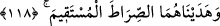
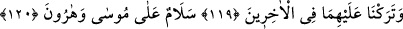
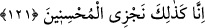
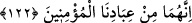
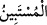

birdir; acele etti, çabuk oldu demektir. Buna göre “ kelimesi, beyan eden,
açıklayan demektir.
118. Her ikisini de doğru yola ilettik.
“Her ikisini de” bu kitap sebebiyle hakka ve fer’î ahkâmın ve şer’î hükümlerin
ayrıntılarının bulunduğu doğruya, “doğru yola ilettik.”
Keşfü’l-esrâr’da der ki, onları Allah’ın dini İslam’a ilettik, yani onda sabit kıldık.
“Sırat-ı müstakim” düz ve doğru yol demek olan hakiki mânâsından alınmış mecaz
olarak “hak din” için kullanılmıştır ki o da İslam dinidir. Bu aklen gerçekleşen bir
durumdur. Buna “istiare-i tahkîkiyye” denilir. Bu kavl-i ilâhîde hakiki ilimlerin ve
Rabbanî ilhamların verilmesine ve bunlarla vâhidiyyet ve ehadiyyet mertebelerine
hidayete işaret edilmektedir.
119, 120. Sonra gelenler içinde, Mûsâ ve Hârûn’a selâm olsun, diye (iyi bir nam)
bıraktık.
“Sonra gelen” ümmet ve millet”ler içinde, Mûsâ ve Hârûn’a selâm olsun diye”
güzel zikir ve güzel bir övgü olan “(iyi bir nam) bıraktık.” Onlar “Mûsâ ve Hârûn’a
selâm olsun” derler ve kıyamete kadar hep onlara dua ederler.
121. Doğrusu biz, iyileri böylece mükâfatlandırırız.
“Doğrusu biz” bunların da içinde bulunduğu “iyileri böylece” kâmil ödül ile
“mükâfatlandırırız.”
122. Şüphesiz, ikiside mü’min kullarımızdandı.
Burada ihsan yolunun iman olduğuna işaret edilmektedir. Buna göre iman, gayb